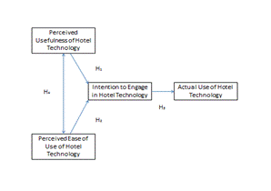
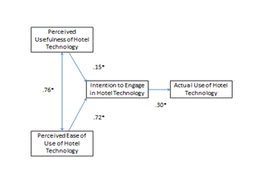

An Examination of Business Traveler’s Perceptions and Intentions toward Hotel Technologies:
Viewed through the Lens of the Technology Acceptance Model
Abstract
This study offers new insight into business traveler’s perceptions and intentions towards hotel technology. In particular, this study attempts to investigate the attitudes of business travelers who adopt hotel technology while traveling, especially as perceived ease of use and usefullness impacts intention and the adoption of hotel technology. A measurement model was developed and used to investigate the relevant relationships among the constructs viewed through the lens of the technology acceptance model and analyzed using structural equation modeling. As expected, business traveler’s intention to engage in hotel technology was positively associated with the technology’s ease of use and usefulness. In particular, this study found that perceived ease of use of hotel technology was a stronger driver of the intent to engage in hotel technology than perceived usefulness of hotel technology.
Authors:
Dr. Gregory Dunn
Department of Hospitality, Tourism & Events
Metropolitan State University - Denver
Denver, Colorado, United States
Dr. Erinn Tucker
School of Hospitality Administration
Boston University
Boston, Massachusetts, United States
Paper Transcript of Paper Titled :
AN EXAMINATION OF BUSINESS TRAVELER’S PERCEPTIONS AND INTENTIONS TOWARD HOTEL TECHNOLOGIES:
VIEWED THROUGH THE LENS OF THE TECHNOLOGY ACCEPTANCE MODEL
An Examination of Business Traveler’s Perceptions and Intentions toward Hotel Technologies:
Viewed through the Lens of the Technology Acceptance Model
Dr.Gregory Dunn
Department of Hospitality, Tourism & Events
Metropolitan State University - Denver
Denver, Colorado, United States
Dr. Erinn Tucker
School of Hospitality Administration
Boston University
Boston, Massachusetts, United States
This study offers new insight into business traveler’s perceptions and intentions towards hotel technology. In particular, this study attempts to investigate the attitudes of business travelers who adopt hotel technology while traveling, especially as perceived ease of use and usefullness impacts intention and the adoption of hotel technology. A measurement model was developed and used to investigate the relevant relationships among the constructs viewed through the lens of the technology acceptance model and analyzed using structural equation modeling. As expected, business traveler’s intention to engage in hotel technology was positively associated with the technology’s ease of use and usefulness. In particular, this study found that perceived ease of use of hotel technology was a stronger driver of the intent to engage in hotel technology than perceived usefulness of hotel technology.
Keywords: Business travelers, hotel technology, structural equation modeling
Introduction
In 2012, companies in the United States spent more than $250 billion on business travel (U.S. Travel Association, 2012). It is widely recognized that business travelers have unique characteristics and technology needs compared to leisure travelers (e.g.,. access to relevant business information, business center services, internet accessibility and speed). A business traveler must be productive while traveling and therefore is often dependent on the proximity and availability of power, Internet connectivity and communication technologies. According to travelers surveyed in 2009 by American Airlines, more than one-quarter (26%) of frequent business travelers polled identified the inability to locate power as a major complaint when traveling (American Airlines and HP, 2009). Furthermore, nearly one-half (47%) of those surveyed also identified Wi-Fi access as the most important airport amenity, thus outscored other basic travel needs, such as food, by nearly 30 percentage points, thereby highlighting the importance of connectivity to productivity. “Business travelers expect connectivity and see it as a necessity, not a luxury," said Carol Hess-Nickels, director of marketing in HP's Notebook Global Business Unit (2009).
Technology has been described as a primary ingredient for service firms to add value to what they offer both their internal and external customers (Lee et. al., 2003). A focus on improving the “guest experience,” in all categories of lodging, has been responsible for driving continual transformation in hospitality technology offerings. Uber high-speed internet access, property-wide wireless coverage, video conferencing and new guest room business and entertainment technologies are among the leading-edge developments for today’s hotel environment. Accordingly, business travelers expect technologies found on the road to be of the same caliber and to offer the same capabilities as technologies they use in other areas of their live (i.e. working from home, leisure travel, etc.).
Considering the competitiveness of the lodging environment and the significant impact the recent economic environment has had on hotel occupancy, average daily rate and revenue per available room, hoteliers need to better understand and serve their guests. One way to gain competitive advantage is to foresee and manage the expectations of business travelers and their use of technology in order to drive traveler productivity, customer satisfaction and repeat patronage. Technology is typically applied at two levels in hotels: (1) in-room (guest room) services; and (2) the managerial and operations level.
In the past, the technologies that hoteliers have chosen to invest in have largely been based on corporate dictate, competitive offers, direct customer feedback and/or a combination of all these factors. Capital investments in new technologies were subject to gaps between consumer demand, actual usage and rapid technological evolution. The desire to have certain technologies shown in customer feedback may differ than what is actually being used by the guest. This makes it challenging for hoteliers to plan for, purchase or upgrade technology to properly service guests’ needs while making intelligent investments decisions for the hotel. Since technologies evolve at a very rapid pace they often become quickly obsolete, therefore compounding the problem of matching business traveler demand with the technology supplied by the hotel. One way for hotel owners and managers to determine in which technology to invest in the future is to explore and identify the actual preferences and technology usage of business travelers.
The purpose of this study is three fold: (1) to explore business traveler use and perceived usefulness of different types of hotel technologies; (2) to investigate business traveler attitudes toward the adoption of hotel technology; and (3) to inform hotelier strategy for investment in technology based on business traveler technology preferences and intentions.
Although there are numerous studies about the ways in which travelers are using hotel technology (Lubbe et al., 2010; Kah et al., 2008); Chia-Yu Chen, 2007) there are few studies about the types of technology used by business travelers and their perceptions of the available hotel technology offerings. This study allows for future examination of this groups desire, usage, and intentions toward hotel guest room technology. Current research has largely focused on examining technology adoption and usage by employees (Siguaw et al., 2000); however business traveler acceptance and use of hotel technology is largely missing in current hospitality research. This study attempts to address business travelers’ acceptance of technology by presenting a modified technology acceptance model (TAM) and examining what they perceive as useful hotel technology (e.g., the hotel’s internet) and their perceived ease of use, or in this case, their “likeliness to engage” in hotel technology. Customers as a market segment, and, business travelers for this study, may desire to have certain technology, however when it comes to what technology is actually used, a gap is formed which makes it challenging for management to purchase technology for its property. Therefore, insights provided from research on the perception, behavior and intentions of business travelers may be useful for management when making hotel technology investment decisions. The insights gleaned from this research will also assist hotel management and technology providers to better understand the drivers of technology use by tech-savvy business travelers.
Literature review
Technology Acceptance Model
The technology acceptance model has been widely applied in consumer behavior research on the acceptance of information technologies (IT) and information systems (IS). The TAM, first proposed by Davis (1986), was conceived in an attempt to predict and explain an individual’s IT or IS acceptance. The TAM is an adaptation of the Ajzen and Fishbein’s (1980) Theory of Reasoned Action (TRA), which is a basis for specifying the causal linkage and flow of a sequence of beliefs, attitude towards use, and behavioral intention to use information technology and systems. The intention to use IT/IS is jointly determined by a consumers’ attitude toward the use of technology and the perceived usefulness of technology, where perceived usefulness directly influences a consumers attitude towards its usage. The theory of reasoned action and the theory of planned behavior (TPB) also proposed by Ajzen (1985), laid the theoretical foundation of the technology acceptance model which proposes that consumer behavior is driven by attitude and intention. A significant amount of a prior research has focused on measuring the effects of consumer perceptions (e.g., perceived usefulness and perceived ease of use of technology) on consumer attitudes towards technology, intention to use technology, and actual usage of technology.
The technology acceptance model has received much academic attention, and comprehensive summaries of the literature and its adaptations can be found in Lee (2006), who examined the impact of select lifestyle factors on consumers’ perception and adoption of technology products; Lee, Kim and Lee (2006) and Wang and Qualls (2007) examined the relationship between managers’ perceptions and beliefs toward information technology systems and processes and managers daily usage.
The technology acceptance model has been applied in the context of internet commerce (Dunn, 2005) and has been found to be a robust, powerful, and parsimonious model for predicting user acceptance of technology. In 2010, the Institute for Scientific Information’s Social Science Citation Index listed over 2300 citations to the two the research that first introduced TAM (Davis, 1989; Davis et al., 1989). The TAM proposes that behavioral intention is a significant determiner of actual system use, and that behavioral intention is determined by two salient beliefs: perceived usefulness and perceived ease of use. According to TAM, individuals’ beliefs determine their attitude towards, and usage of, an information technology or system.
For the purposes of this paper, TAM is used as the theoretical framework to examine business traveler’s perceptions and intentions toward hotel technology (Figure 1). It is reasoned that if a consumer has positive perceptions towards an object, generally their intention to engage and use that object is favorable. Across the many empirical tests of TAM, perceived usefulness has consistently been found as a strong determinant of consumer intention and use of technology, while perceived ease of use, has been found to have a lesser effect on consumer intention toward technology (Venkatesh and Davis, 2000). A better understanding of the drivers of hotel technology preference and use would help to inform hotel managers in their planning and purchasing of hotel information technology and systems. Fig. 1 depicts the hypothesized model used to analyze the relationships between: (1) perceived usefulness and intention to engage in hotel technology; (2) perceived ease of use and intention to use hotel technology; (3) intention to engage in hotel technology and actual use of hotel technology; and (4) perceived usefulness of hotel technology and perceived ease of use of hotel technology.

Hypothesized Hotel Technology Acceptance Model
Methodology
Data Collection
Data for the study was collected using a self-administered 30-minute survey distributed via email to 12,500 pre-qualified members of an industry leading marketing research firms’ U.S.-based consumer panel. Respondents were pre-qualified along the following criteria: (1) active business travelers (e.g., defined as having taken more than four business trips of at least 75 miles or more from home during the previous 12 months in which they stayed in commercial lodging, and (2) active users of technology (e.g., consider themselves to be active users of personal, business and entertainment technologies), and 3) geo-demographics (i.e. U.S. residents aged 18 years and older).
Instrument
A multi-stage process was employed for the development of the questionnaire. First, preliminary measures of the variables included in the study were adapted from previous research that investigated consumer use, preference and intentions toward technology. The questionnaire contained 5 sections: (1) trip characteristics and preferences, (2) personal technology ownership and usage, (3) lodging technology preferences and usage, (4) interest in personalization of future technology, and (5) demography.
The majority of the interview time was spent asking respondents about their ownership, usage, preferences and intentions toward personal and hotel technologies. In particular, respondents were asked 10 questions related to their business trip characteristics (e.g., when traveling for business, which type of lodging accommodations do you prefer?) and preferences (e.g. please rate the desirability of having each of the following technologies available to you in a hotel or resort); 14 questions related to personal technology ownership and usage (e.g., regarding Web-based phone service, which of the following do you currently utilize?); 10 questions related to lodging technology preferences and usage (e.g., when videoconferencing while traveling for business, which of the following do you prefer to use?); 4 questions on their interest in personalization of technology (e.g., rate your level of interest in using technology to engage in personalizing your hotel/resort stay); and 6 questions on demography (e.g., please indicate your total annual household income).
Questions related to the perceived usefulness of hotel technology were derived from Lai & Li, (2005) and Shih (2004) using 13 items (e.g., use of internet concierge support available through the toll-free hotline, choosing pricing options based on the speed of internet connection price), while questions related to the perceived ease of use of hotel technology were derived from Hsu & Lin (2004) using sixteen items (e.g., watching a full length TV program through the internet, downloading movies onto an Ipod, carrying a laptop on business trips). Questions related to the intention to use technology were derived from Morosan & Jeong (2008) using fifteen items (e.g., availability of wired access in guest rooms, availability of wireless access in meeting rooms, free internet in guest rooms). Questions related to the actual usage of hotel technology were derived from several studies including Lee et al. (2003, 2006) using nine items (e.g., responsiveness of tech support staff, reliability of the internet connection). The final section of the questionnaire contained seven questions related to demographic information (e.g., gender, age, household income, marital status, and race).
A pre-test was administered to further refine the attitudinal and behavioral measures derived from the literature review. Thirty-five travel marketing professionals who met the screening criteria participated in the pretest. Participants were asked to take the survey online and provide feedback to ensure all instructions and questions were understood as intended. The initial emailing to consumers was followed by 4 reminders sent every 5 days after. Respondents who opted out or communicated their preference to be taken off the mailing list were deleted appropriately from the email list of participants. The survey resulted in an 8.8% delivery rate and a 5.2 % usable response rate (n = 651 usable questionnaires). Specifically, of the 1100 respondent visits to the survey, 651 were completed while 449 were partially completed and or deemed unusable- and thus discarded. The unusable questionnaires were due to the following reasons: (1) a large number of missing responses, (2) respondents did not meet the minimum qualifying question of having booked at least four business trips during the past year, or (3) the focus on the business travel and use of technology may have initiated consumer hesitancy in participation due to concerns about privacy, spam and sharing of personal information (Miyazaki and Fernandez 2000). Based on these considerations, the response rate and the net usable responses were considered acceptable for further study.
Results
The properties of the four research constructs (two exogenous variables– perceived usefulness of hotel technology and perceived ease of use of hotel technology; and two endogenous variables- intention to engage in hotel technology and actual use of technology in) were tested with anMPlus 5.2 application of structural equation modeling (SEM) software (Muthén & Muthén, 2009). SEM is designed to evaluate how well a proposed conceptual model that contains observed indicators and hypothetical constructs explains or fits the collected data (Bollen, 1990; Yoon, Gursoy, & Chen, 2001). It also provides the ability to measure or specify the causal relationships among sets of unobserved constructs and theory. The SEM procedure was an appropriate application for analyzing the proposed hypothetical model.
Descriptive Statistics
A sample of six hundred and fifty-one completed questionnaires was deemed usable for further statistical analysis. More than one-third (36%) of respondents were classified as half (earn an annual household income of more than $75,000 per year, and six in ten (respondents have taken between four and seven overnight business trips during the previous year. Nearly all (97%) respondents have used the internet while staying at a hotel or resort during the previous 12 months and approximately seven in ten (68%)% use both wireless and wired connections while staying in a hotel or resort.
Respondent characteristics
Demographics |
||
Demographic Variable |
Frequency |
Percent % |
Gender |
391 |
60.1 |
Age |
413 |
62.4 |
Annual Household Income |
58 |
8.9 |
Number of overnight trips taken 75 miles or more from home during last 12 months |
392 |
60.2 |
Use of the internet in a hotel/resort during the last 12 months |
635 |
97.5 |
Use of wireless or wired internet access in a hotel/resort during the last 12 months |
40 |
6.1 |
Occupation |
233 37 |
35.8 5.7 |
Reliability and Validity
The reliability of each construct was measured by computing the composite reliability Cronbach’s alpha coefficients (Table 1). Kaiser (1974) recommends accepting variables for further analysis with reliability coefficient values above 0.8.The reliability coefficients for the four constructs were: (1) perceived usefulness of hotel technology (0.88), (2) perceived ease of use of hotel technology (.92), (3) intention to engage in hotel technology (.92), and (4) actual use of hotel technology (.93). In addition, discriminant validity of the four constructs was also confirmed and found to be satisfactory. All correlation coefficient values fell in the acceptable range (e.g., between .85 and .10) according to Kline, 1998. Additionally the average variance extracted (AVE) for all four constructs exceeded the target threshold value of .5 (Fornell & Larckaer, 1981) and the square root of AVE of each construct exceeded target values as recommended by Gefen & Straub, 2005.
Cronbach’s alpha coefficeints
Cronbach’s Alpha Coefficients |
||
Constructs |
N of Items |
Cronbach’s Alpha |
Perceived usefulness of hotel technology |
13 |
.881 |
Perceived ease of use of hotel technology |
16 |
.915 |
Intention to engage in hotel technology |
15 |
.883 |
Actual use of hotel technology |
9 |
.925 |
Exploratory Factor Analysis
Exploratory factor analysis (EFA) was employed to uncover the underlying structure of the variables that comprised perceived ease of use of hotel technology and perceived usefulness of hotel technology. EFA is commonly used to identify the underlying relationships between measured variables and when developing scales and identifying a set of latent constructs within a battery of measured variables (Hair et al. 2003). Three factors were derived for perceived ease of use with hotel technology (Table 2) and include: (1) watching TV and movies through the computer, (2) Ipod use, and (3) travel with laptops. Two factors were derived for perceived usefulness of hotel technology: (1) pricing options and (2) availability of wireless internet.
Results of the Exploratory Factor Analysis
Perceived Usefulness of Hotel Technology |
||
Item |
Factor Loadings |
Eigenvalue |
Factor 1: Pricing Options |
|
32.12 |
Variable pricing options based on the speed of the internet connection (price) |
.727 |
|
Frequent user program that includes prices and rewards from the internet service provider (price) |
.722 |
|
Different prices for heavy user (lots of downloading) vs. light user (email/Internet surfing) (price) |
.699 |
|
Download music for fee (price) |
.682 |
|
Internet "concierge" support available through toll-free hotline (price) |
.676 |
|
Daily pricing usage plans less than $10 per day (price) |
.621 |
|
Hourly pricing usage plans (price) |
.607 |
|
Factor 2: Availability of Wireless Internet |
|
10.10 |
Availability of wireless access in meeting rooms |
.583 |
|
Availability of wireless access in public areas (lobby, restaurant, etc.) |
.560 |
|
Availability of wired access in guest rooms |
.540 |
|
Free Internet access for guests |
.500 |
|
Availability of wireless access in guest rooms |
.439 |
|
Privacy protection |
.422 |
|
Perceived Ease of Use of Hotel Technology |
||
Factor 1: Watching TV/Movies via the internet |
|
44.00 |
Download a full length movie via the internet |
.841 |
|
Watch a full length TV program through via the internet |
.838 |
|
Watch a full length movie via the internet |
.824 |
|
Download a network TV program on a computer |
.811 |
|
Watch a program while traveling that has been downloaded to a computer |
.788 |
|
Factor 2: iPod Use |
|
7.90 |
Download a music video from the internet to a computer |
.675 |
|
Record a music video from the internet onto a computer |
.671 |
|
Record a music video from the internet to an iPod |
.638 |
|
Factor 3: Travel with laptops |
|
4.15 |
Carry a laptop on a business trip |
.867 |
|
Caryy a laptop on a business trip longer than 2 days |
.856 |
|
Carry a laptop on a business trip fewer than two days |
.801 |
|
Carry a cell phone on business trips |
.782 |
|
Carry a cell phone on leisure trips |
.779 |
|
Carry a laptop on leisure trips |
.702 |
|
Carry a PDA on business trips |
.875 |
|
Carry a PDA on leisure trips |
.867 |
|
Overall Model Fit
Path analysis using MPlus Version 5.21 was employed to test the hypotheses of all four constructs. The path model was estimated for the Hotel Technology Acceptance Model as shown in Figure 2. The model included 53 items describing four latent constructs: perceived usefulness of hotel technology, perceived ease of use of hotel technology, intention to engage in hotel technology and actual use of hotel technology. The measurement model test resulted in a good fit between the data and the proposed measurement model. At the overall model level, the goodness of fit indices for the measurement model were (CFI =0.925 and RMSEA=0.051), which met the recommended values for goodness of fit (e.g., CFI>.90 and RMSEA<.05) met. Chi-square statistical analysis was also used to evaluate how well the model reproduced the sample covariance/correlation matrix. The final 37 item, two factor model had a significant chi-square (χ2=2454.231, p<001, df = 952). The normed chi-square value (χ2/df = 2.6) indicated a marginal fit against the recommended value of χ2/df<5.0 (Tanaka & Huba, 1985). However, since chi-square is sample size sensitive it is often found as significant when a sample size is larger than 100 (Hair, et al 1998).
To determine the structural model fit, additional goodness of fit indices (e.g. CFI, SRMR) and root mean square of approximation (RMSEA) were examined. An acceptable model fit should have a CFI value greater than .90 (Kline, 2005). RMSEA is a parsimony-adjusted index in that its formula includes a built-in correction for model complexity. This means that given two models with similar overall explanatory power for the same data, the simpler model will be favored (Kline, 2005). While the CFI is generally used as a key indicator of a models goodness of fit to the data, RMSEA is sometimes viewed as a ‘badness-of-fit” index in that a value of zero indicates the best fit and higher values indicate a worse fit between the model and the data. Therefore, a rule of thumb is that a RMSEA value of less than .05 indicates a close approximate fit, while RMSEA values between .05 and .08 suggest a reasonable error of approximation and fit, and RMSEA values of more than.10 suggest a poor fit (Brown & Cudeck, 1993). Tests of the initial hypothesized model resulted in mixed goodness of fit indices (e.g., a satisfactory RMSEA value of 0.049 and an SRMR value of 0.082, yet an unsatisfactory CFI value of .913).
The study then looked to improve the model fit by examining factor loading reliabilities, and modification indices. First, a review of all factor loadings was made to ensure significance at the alpha = 0.05 level. Next, another review of the item reliabilities was conducted to ensure all were above the recommended acceptable value of 0.50 (Hair, et al 1998). A total of eight of the 37 items were eliminated from further analysis, resulting in a 29 item final measurement model.
Goodness of fit indices
Goodness of Fit Test – Measurement Model and Hypothesized Model |
|||
Fit Statistic |
Measurement Model |
Hypothesized Model |
Recommended Value |
χ2/df |
1558.662 (574) |
2052.287 (866) |
- |
p-value |
0.000 |
0.000 |
< 0.05 |
RMSEA |
0.051 |
0.046 |
< 0.05 |
CFI |
0.929 |
0.934 |
> 0.90 |
SRMR |
0.079 |
0.078 |
< 0.10 |
A test of the final measurement model resulted in a large chi-square statistic significant at the p<.001 level (χ2=1558.662, p<001, df = 574). A small chi-square to degrees of freedom statistic usually indicates a good model fit, but in this case the chi-square statistic was large and significant suggesting a poor model fit. The normed chi-square statistic [(χ2/df) = 2.4] also indicated a marginal fit as compared to the preferred normed chi-square value of χ2/df < 5.0 (Tanaka & Huba, 1985). Moreover, the CFI for the measurement model (CFI = 0.929) was also found to be satisfactory (e.g. CFI.>0.90) therefore indicating an acceptable model fit. A chi-square difference statistical analysis (χ2D) was then conducted to test the statistical significance of positive or negative changes in the overall model fit as paths are eliminated (trimmed) or added (built) (Kline, 2005). The analysis of chi-square differences (χ2D = χ2H (866) - χ2M *(574) = 2052.287 – 1558.662, and therefore χ2D (292) = 493.625). The analysis found that the overall fit of the structural measurement model was found to be statistically better than the original hypothesized model at the .05 level.
The model was then tested by structural equation modeling (SEM), which included a test of the overall model as well as individual tests of the relationships among the latent variables. All path coefficients were found to be positive and significant as shown in Figure 2. Accordingly, all hypothesized relationships (H1 – H4) between constructs were supported and found significant. As expected, the intention to engage in hotel technology was positively associated with the perceived usefulness of hotel technology (β=.15, p<.05), supporting H1. A stronger, positive association was also found between the intention to engage in hotel technology and the perceived ease of use of hotel technology (β=.72, p=<.05), supporting H2. A positive association between the intention to engage in hotel technology and actual use of hotel technology was also found (β=.30, p<.05), supporting H3. Finally, H4 was supported as there was also a strong and positive association found between perceived usefulness of hotel technology and perceived ease of use of hotel technology (β=.76, p<.05).

An Estimated Hotel Technology Acceptance Model
Discussion and Conclusions
The purpose of this study was to (1) explore business traveler perceptions of the ease of use and usefulness of different types of hotel technologies, (2) investigate perceptions and intentions toward the adoption and actual use of hotel technology, and (3) provide suggestions for hotelier investment in information technology and systems based on business traveler technology preference and usage. Respondents in the survey were asked to rate listed hotel technologies in terms of perceived usefulness or ease of use on a five point scale, where 1 equaled not at all and five equaled very much. The study found that business travelers perceived free high-speed internet in the guest room (mean=4.56), free wireless internet in the guest room (mean=4.55), variable pricing options based on the speed of the internet connection (mean=4.40), and free wireless internet access in the hotel/resort public areas (mean=4.36) as highest in terms of perceived usefulness of hotel technology, while the ease to which business travelers can download movies (mean=4.52) and network TV (mean=4.47) as highest in terms of ease of use of hotel technology. The hotel technologies that business travelers most intend to engage include sending/receiving email over the internet (4.38), watching news, sports and weather on the television (4.17), and searching web sites for detailed information about local restaurants, attractions, special events, to do while visiting locally (4.09). The technologies rated the highest in terms of business traveler actual use include carrying a cell phone on a business trip (4.59), carrying a cell phone on a leisure trip (4.57), and carrying a laptop with them on a business trip (4.45).
There are several implications from this research. First and to the author’s knowledge, this is the first study to use TAM as a conceptual framework and employ structural equation modeling in an analysis of the proposed set of hotel technology variables. Second, the technology acceptance model proposed that behavioral intention toward technology, driven by perceived usefulness and ease of use, is a key determinant of hotel technology usage. In prior empirical studies and applications of TAM, perceived usefulness has been identified as a strong determinant of intention and usage (Venkatesh and Davis, 2000). However, in this study, while perceived usefulness was once again found to be a positive determinant of intention and usage, it was a fairly weak determinant ((β=.15, p<.05). In fact, perceived ease of use of technology was found to be a much stronger determinant of technology intention and usage ((β=.72, p<.05). Furthermore, this study also confirmed that business traveler perceptions toward the ease of use of technology have both direct and indirect effect on behavioral intention to use hotel technology. More specifically, the results of the study not only presented the direct effect of perceived usefulness of hotel technology on intentions, but also indicated an indirect effect of intention to engage on actual usage. This study found a strong positive association between perceived ease of use and perceived usefulness (β=.76, p<.05), which is in line with the findings from prior studies (Avis, 1989; Chau, 1996). Finally, this findings in this study are both similar yet different than that found in prior research in that consumer intention to engage in technology has a positive yet moderately weak association with the actual use of technology (β=.30, p<.05).
One of the implications from this study is that hoteliers must recognize the importance of free and or reasonably priced high-speed wireless access is to business travelers. Hotel managers must expect to continue to make capital investments in new guest technologies and internet connectivity in order to meet and exceed future consumer demand for greater bandwidth as a result of consumer preference for, and adoption of, increasingly useful and easy to use technologies such as next generation smartphones, laptop computers and hand-held gaming devices. There are limitations in this research that should be considered. First, the sample for the study was generated as a convenience sample where respondents were pre-qualified and recruited as business travelers through the use of a leading marketing research panel and therefore the results of the research may not be generalizable to the population. Second, the research was conducted with business travelers residing in the United State and future research is recommended on consumers residing in different geographic regions. Third, the research was conducted with consumers who stayed in various hotels and future research may want to explore traveler attitudes, preferences toward hotel technology providers or hotel brands. In addition, this model is recommended to be tested among leisure travelers, and group and convention travelers to identify similarities and differences on perceptions, intentions and usage of hotel technologies.
References
Ajzen, I. (1985). From Intentions to Actions: a Theory of Planned Behavior in J. Kuhland and J. Beckman (Ed.). Action-control: From Cognitions to Behavior, Springer, Heidelberg, 11-39.
Ajzen, I. (1991). The Theory of Planned Behavior. Organizational Behavior & Human Decision Processes, 50, 179-211.
Ajzen, I. and M. Fishbein (1980). Understanding Attitude and Predicting Social Behavior. New Jersey, Prentice Hall.
American Airlines and HP Survey Shows Bigger Connection Between Travel and Technology in 2009. In Hewlett-Packard New Release. Retrieved from http://www.hp.com/hpinfo/newsroom/press/2009/090522a.html
Anderson, J. C., & Gerbing, D. C. (1988). Structural equation modeling in practice: A review and recommended two-step approach. Psychological Bulletin, 103, 411-23.
Bollen, K.A. (1990). Overall fit in covariance structure models: Two types of sample size effects. Psychological Bulletin, 107(2), 256-59.
Browne, M. W.. & Cudeck, R. (1993). Alternative ways of assessing model fit. In K. A. Bollen & J. S. Long (Eds.), Testing structural equation models (136-162). Newbury Park, CA: Sage.
Chang, M. (1998). Predicting unethical behavior: A comparison of the theory of reasoned action and the theory of planned behavior. Journal of Business Ethics, 17, 1825-34.
Davis, F. D. (1989). Perceived Usefulness, Perceived Ease of Use and User Acceptance of Information Technology. MIS Quarterly, 13(3), 319-39.
Davis, F. D., Bagozzi, R. P., and Warshaw, P. R. (1989). User Acceptance of Computer
Technology: A Comparison of Two Theoretical Models. Management Science, 35(8), 982-1002.
Davis, F. D. (1986). Technology acceptance model for empirically testing new end users information systems: theory and results, (Unpublished doctoral dissertation). Massachusetts Institute of Technology, Cambridge, Mass.
Dillman, D. A. (2000). Mail and Internet surveys--The tailored design method. New York, NY : John Wiley & Sons, Inc.
Dunn, G. E. (2005). An examination of consumer e-loyalty to online travel intermediaries (Unpublished doctoral dissertation). University of Nevada Las Vegas, Las Vegas, NV.
Fishbein, M. and I. Ajzen. (1975). Belief, attitude, Intention, and behavior: An Introduction to Theory and Research. Reading, Mass.: Addison Wesley.
Fredicks, A.J. and D. L. Dossett. (1983). Attitude-behavior relations: A comparison of the Fishbein-Ajzen and the Bentler-Speckart Models. Journal of Personality and Social Psychology, 45, 50-512.
Hair, J. F., B. Babin, et al. (2003). Essentials of Business Research Methods, London, England: Wiley.
Hastings, W. and K. Fletcher. (1993). The relevance of the fishbein model to insurance buying. The Services Industry Journal, 296-307.
Huh, H. J., T. Kim and R. Law. (2009). A comparison of competing theoretical models for understanding acceptance behavior of information systems in upscale hotels. International Journal of Hospitality Management, 28, 121-134.
Kaiser, H. F. (1974). An index of factorial simplicity. Psychometrika, 39, 31-6.
Kline, R. B. (2005). Principles and practice of structural equation modeling (2nd ed.). New York, NY: Guilford.
Lee, H. Y., W. G. Kim and Y. K. Lee. (2006). Testing the determinants of computerized reservation system users’ intention to use via a structural equation model. Journal of Hospitality & Tourism Research, 30(2), 246-266.
Lee, S.C., S. Barker, et al. (2003). Technology, service quality, and customer loyalty in hotels: Australian managerial perspectives. Managing Service Quality, 13(5), 423-32.
Lee, Y., K. Kozar and K. R. T. Larsen. (2003). The technology acceptance model: Past, present and future. Communications of the Association for Information Systems, 12(50): 752-780.
Madden, T.J., P.S. Ellen and I. Ajzen. (1992). A comparison of the theory of planned behavior and the theory of reasoned action. Personality and Social Psychology Bulletin, 18, 3-9.
Mohr, K., Backman, K. F., Gahan, L. W., & Backman, S. J. (1993). An investigation of festival motivations and event satisfaction by visitor type. Festival Management and Event Tourism, 1(3), 89–97.
Muthén, L. K., & Muthén, B. O. (2009). Mplus 5.2 [Computer software]. Los Angeles, CA: Muthén & Muthén.
Siguaw, J. A., C. A. Enz, et al. (2000). Adoption of Information Technology in U.S. Hotels: Strategically Driven Objectives. Journal of Travel Research, 39(2), 192.
Tanala, J. S. & Huba, G. J. (1985). A fit index for covariance structure models under arbitrary GLS estimation. British Journal of Mathematical and Statistical Psychology, 38, 197-201.
U.S. Travel Association.(n.d.). In U.S. Travel Association online website. Retrieved from http://www.ustravel.org/news/business-travel-roi.
Venkatesh, V. and Davis, F. D. (2000). A Theoretical Extension of the Technology Acceptance Model: Four Longitudinal Field Studies. Management Science, 46(2), 186-204.
Wang, Y. and W. Qualls. (2007). Towards a theoretical model of technology adoption in hospitality organizations. Hospitality Management, 26, 560-73.
Yoon, Y., Gursoy, D., & Chen, J. (2001). Validating a tourism development theory with structural equation modeling. Tourism Management, 22(4), 363–72.
- AUTHORS PROFILE
- Greg Dunn joined the faculty of Metropolitan State University Denver in the fall of 2013. Previously, Greg served as Executive Vice President at MMGY Global (formerly Ypartnership) and a member of the faculty at the University of South Florida. At MMGY, he was responsible for sourcing, composing, managing implementation and interpretation of marketing research and brand strategy while playing an active role in key account leadership and development of client marketing strategy. As an Assistant Professor at USF, Greg specialized in teaching, research and service in the areas of marketing and management in the travel, hospitality and gaming industry. Greg joined MMGY/Ypartnership and USF after acquiring more than 25 years of experience in various industry disciplines working in both management and marketing positions. He earned an MBA from the University of Denver, a Ph.D. from the University of Nevada Las Vegas and a diploma in hotel management from Ecole Hôtelière, Lausanne, Switzerland.
- Erinn Tucker joined the faculty at Boston University School of Hospitality Administration in the fall of 2011. Professor Tucker has worked in the areas of corporate sponsorships, event marketing and sales, and special events for General Motors, R*Works, and Dave & Busters, Inc. (formerly Jillian’s Entertainment). She held positions such as southeast promotions manager where she negotiated sponsorship proposals for PGA Tour-sanctioned events and later as a special events manager. Professor Tucker holds a bachelor’s in business administration from Florida A&M University, a master’s in sports administration from Florida State University, a master’s in business administration (MBA) from Winthrop University, and a PhD from Oklahoma State University (OSU). Prior to beginning her studies at OSU, Professor Tucker was an assistant professor at Johnson & Wales University—Charlotte and an adjunct instructor at UNLV-Singapore.